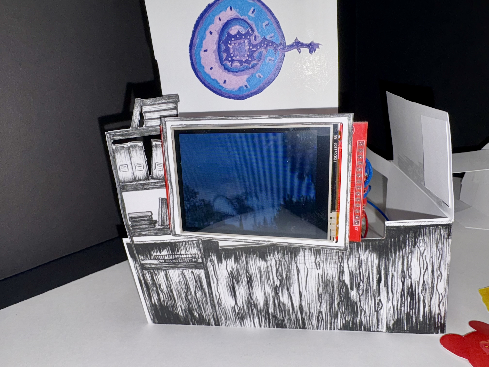
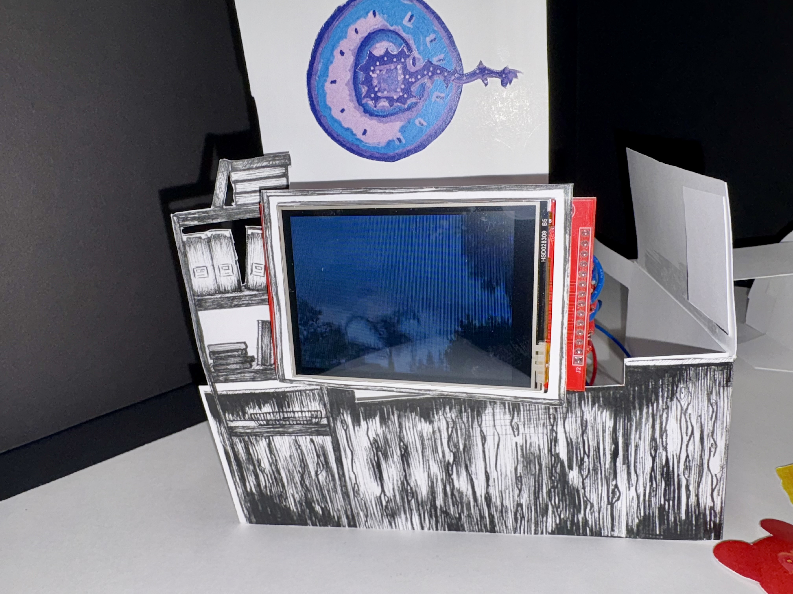
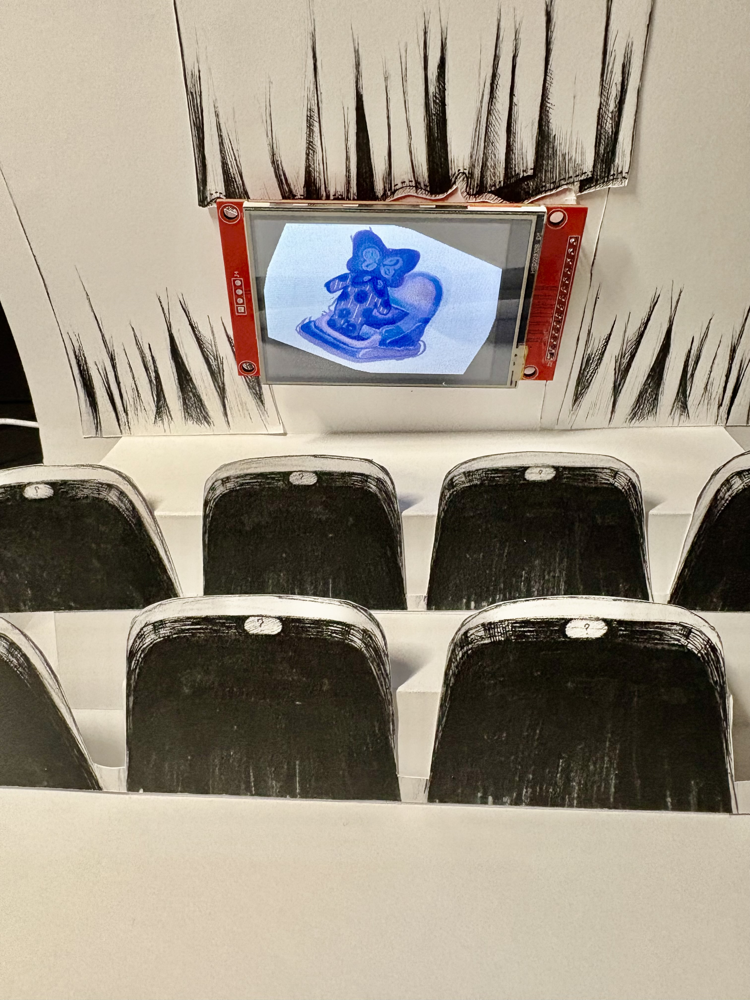
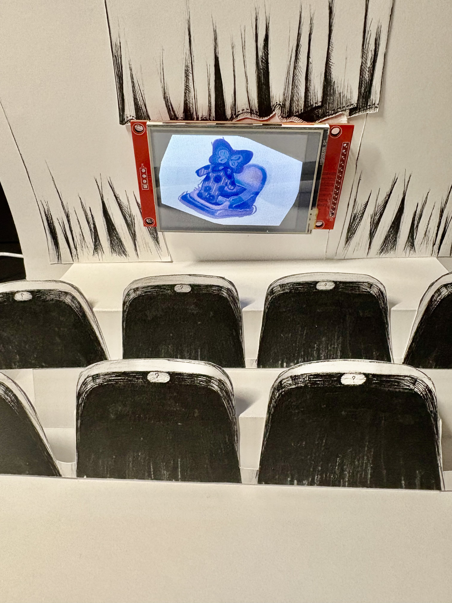
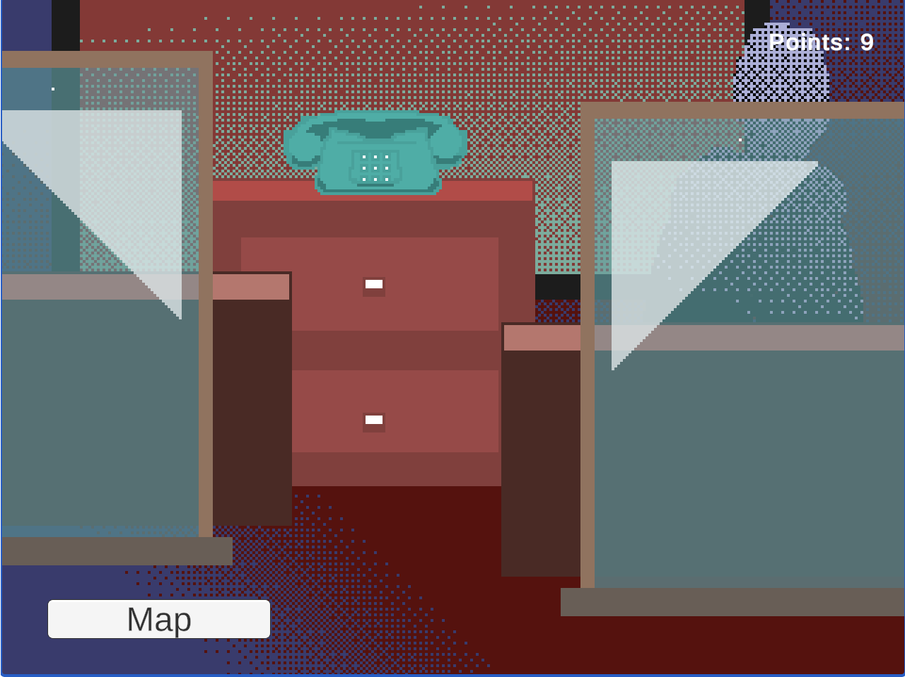
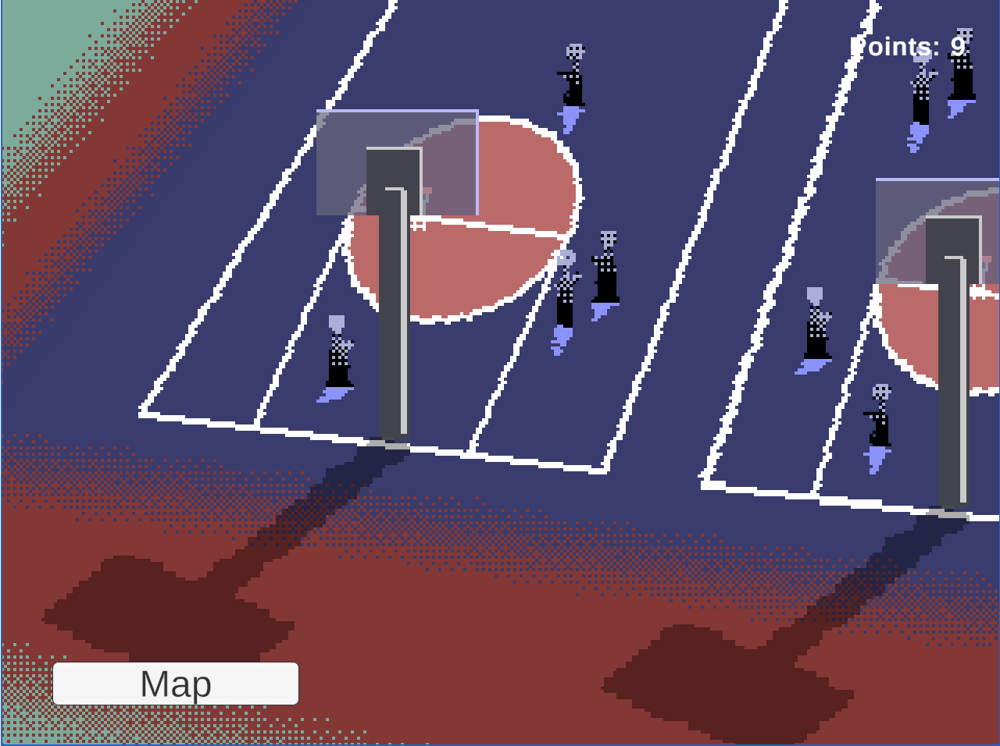
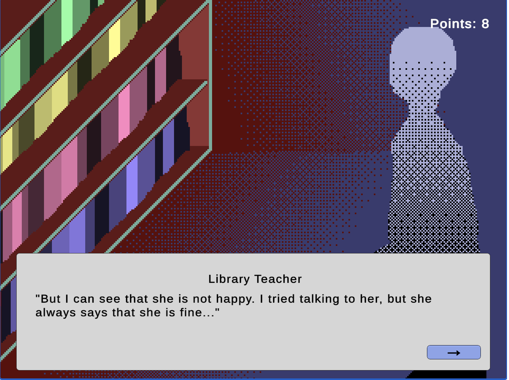
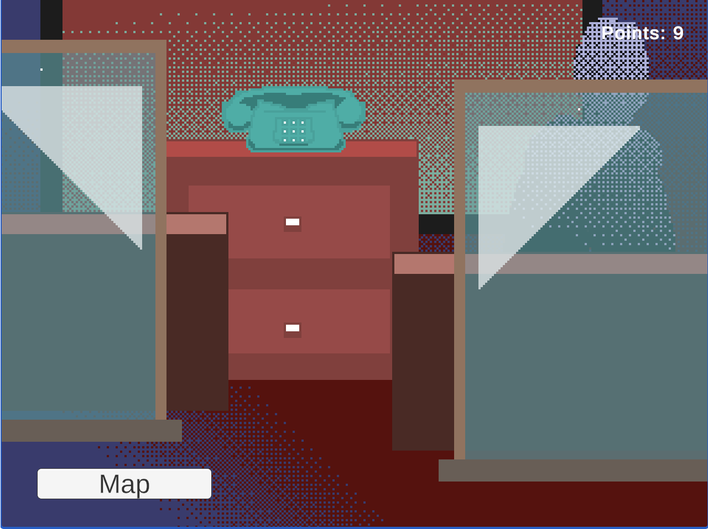
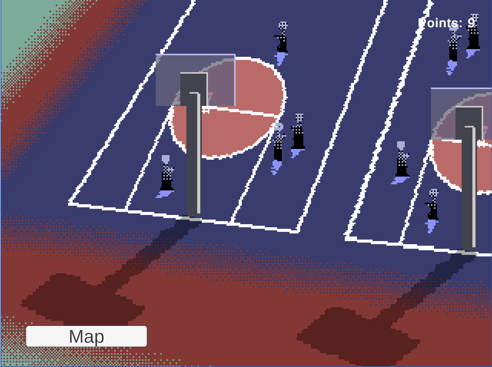
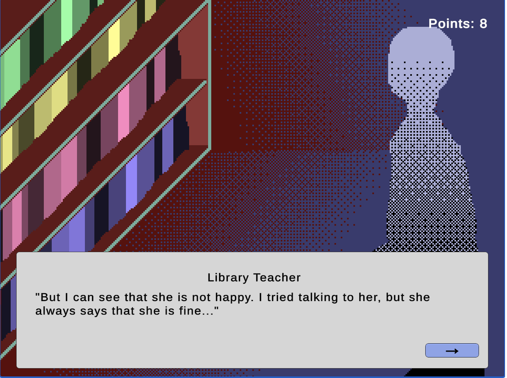

Dreamcore
Two-Folio Interactive Pop-Up Installation
November 2025
Project Overview
Dreamcore explores liminal spaces as psychological safe zones—quiet, transitional environments that feel both familiar and unreal. The project takes the form of a two-folio interactive pop-up installation that blends hand-crafted paper engineering with responsive digital systems.
All environments were hand-drawn, digitally edited, and printed onto 100lb paper to preserve tactile ink texture while accommodating embedded electronics. Rather than presenting narrative through a screen alone, Dreamcore asks whether an analog, handcrafted world—augmented through Arduino-based interaction—can evoke the uncanny softness, nostalgia, and ambiguity associated with dreamcore aesthetics.
Video Demos
Folio page 1 Runtime: 0:54
Folio page 2 Runtime: 1:42
The first folio opens to an empty classroom and a lone bicycle selling balloons. A color sensor connected to an ESP32 microcontroller detects the viewer’s interaction: when a balloon object is placed “outside” the window, animated balloons drift into a dreamlike sky displayed on a TFT screen. The interaction is intentionally simple, allowing a single physical gesture to produce a quiet but emotionally resonant response.
 


The second folio reveals fading storefronts and a silent movie theater. Using a rotary input, viewers can tilt the TFT display toward themselves—confronting their own presence within the emptiness—or watch a half-forgotten moment: a kiddie ride outside an abandoned shop slowly rocking on its own. These interactions are designed to feel restrained rather than instructional, encouraging reflection rather than task-based engagement.

 

Dreamcore integrates pop-up paper structures, origami-based mechanisms, hand illustration, and physical computing into a single system. I worked with the Arduino IDE on an ESP32 microcontroller, integrating color sensors, rotary inputs, and TFT displays with Processing-based visuals.
Building the project required repeated cycles of cutting, folding, measuring, coding, redrawing, and rebuilding. Pop-up stability, sensor reliability, wiring layout, and screen placement were tested and revised through multiple iterations. The physical constraints of paper engineering directly informed the electronic system design, requiring careful coordination between structure, circuitry, and code.
Through this process, I developed a workflow that balances precision with openness—designing interactive systems that are structurally sound while remaining emotionally ambiguous. Dreamcore ultimately reinforced my interest in creating hybrid environments where meaning emerges through the tension between analog craft and digital response.

.png)
.png)
.png)
 




